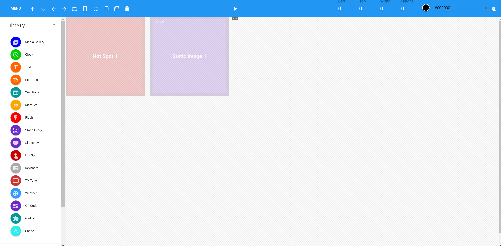
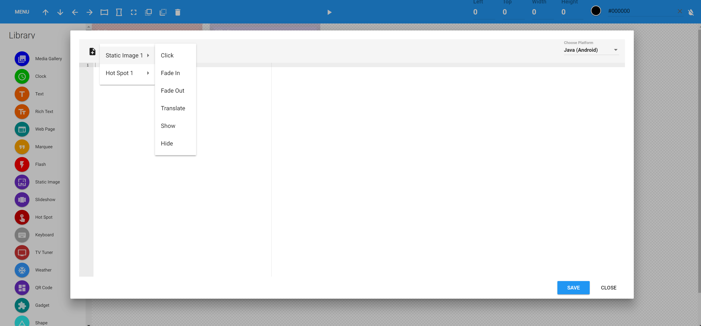

Revel Digital Player API for Android
Introduction
The Revel Digital Player API provides runtime access to the Revel Digital player software. This capability allows complete freedom to manipulate the signage, while it's playing, to achieve any level of functionality required.
The player software is built on the Android Platform and utilizes a Javascript scripting engine for interpretation of user supplied code. Scripts are able to leverage the complete Android Framework.
At the heart of the API is the Controller.
The Controller has a reference to the currently active Schedule and
Template.
Each Template has a list of its Modules which together compose the template content.
Each template Module
has a reference to the actual control responsible for rendering its content.
The control is accessed through the RevelControl
interface and has a number of RevelDigital specific methods and properties.
The RevelControl interface can also be treated as a reference to an Android View
for performing any Android specific operations. Similarily the Template
interface can be treated as a reference to an Android ViewGroup.
Example script
The following example will fade out an image when a hot spot is clicked. The template looks like this:

The image is named Static Image 1 and the hot spot is named Hot Spot 1.
These names are assigned at template design time and are always accessible from script directly by name.
Spaces and other special characters in the name are always substituted with an underscore in script.
To edit the script for this template, click to open the Menu in the template designer, then click RevelScript Editor. Then enter the following script:
Hot_Spot_1.setOnClickListener(new View.OnClickListener() {
onClick(View v) {
Static_Image_1.animate().alpha(0);
}
});
In this example an event handler was added for the Click event. This in turn called alpha method of the Android animation framework to perform the fade.
Snippets
The script editor has a number of built-in snippets available for some of the more common scripting tasks. Only zones currently added to the template will be available in the snippet dropdown.

These snippets will auto generate the script necessary to perform the function selected.
IMPORTANT: Make sure your platform is properly selected at the top/right of the script editor window.
Technical Reference
Please refer to our technical API website for more details on actual controls, events, and methods available.
https://reveldigital.github.io/RevelDigital.Player.Android.Doc/